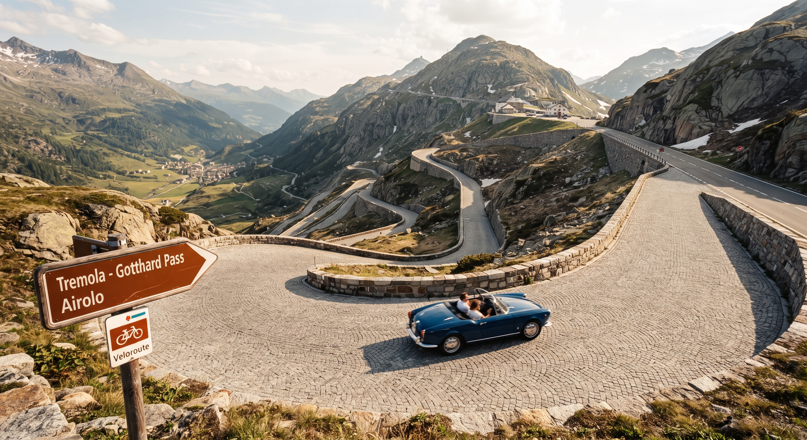

Strasbourg-Milan sans autoroute : du vignoble alsacien au lac de Côme par le col du Saint-Gothard

Entre l'Alsace et la Lombardie, il existe une route qui raconte huit siècles de commerce, de pèlerinages et d'ingénierie : celle du Saint-Gothard. Oubliez le tunnel et l'autoroute : en passant par le vignoble alsacien, Bâle, Lucerne, le col du Saint-Gothard et le lac de Côme, vous traversez trois pays et une série de paysages qu'aucun péage ne laisse voir. Voici un road trip de 3 jours et environ 600 km, sans autoroute, à faire à votre rythme. Les distances sont approximatives : pour votre propre variante, utilisez notre planificateur d'itinéraire sans autoroute.
1. Le Gothard, un axe nord-sud vieux de huit siècles
Le passage du Saint-Gothard est l'une des grandes portes des Alpes. Il relie le nord de l'Europe à l'Italie, et son point le plus difficile était les gorges de la Schöllenen, entre Göschenen et Andermatt, longtemps considérées comme presque infranchissables. Selon la légende, c'est le diable lui-même qui aurait aidé à construire le célèbre pont du Diable sur la Reuss. Le pont de pierre que l'on voit aujourd'hui date de 1830.
La même époque donne naissance à la route de la Tremola, côté tessinois : construite entre 1827 et 1830 d'après les plans de l'ingénieur Francesco Meschini, pavée de granit, avec 24 virages en épingle sur son tronçon le plus spectaculaire (300 m de dénivelé sur 4 km). Reconstruite en 1951, elle est souvent présentée comme le plus long monument routier de Suisse. Les tunnels sont venus ensuite : le tunnel ferroviaire en 1882, le tunnel routier en 1980 et le tunnel de base en 2016. Chaque fois, le col s'est un peu plus effacé derrière les machines. C'est justement ce que cet itinéraire vous propose de retrouver.
2. Étape 1 : Strasbourg - Lucerne (environ 255 km)
- Strasbourg : la cathédrale Notre-Dame, dont la flèche fut le plus haut édifice du monde de 1647 à 1874, et le quartier de la Petite France.
- Obernai et la route des vins d'Alsace : créée en 1953, elle serpente sur environ 170 km et relie quelque 119 villages typiques. Choisissez-en quelques-uns plutôt que de tout voir.
- Riquewihr, Ribeauvillé, Kaysersberg : maisons à colombages, caves et remparts.
- Eguisheim : village en cercle autour de son château, parfait pour une pause dégustation.
- Colmar : le musée Unterlinden et son célèbre retable d'Issenheim, puis la Petite Venise.
- Bâle : la cathédrale (Münster) au-dessus du Rhin et le Kunstmuseum, l'un des grands musées d'art de Suisse.
- Lucerne : le pont de la Chapelle (Kapellbrücke) sur la Reuss et le lac des Quatre-Cantons. Nuit sur place.
3. Étape 2 : Lucerne - Lugano par le col du Saint-Gothard (environ 215 km)
- Altdorf : la ville de Guillaume Tell et sa statue sur la place principale.
- Gorges de la Schöllenen et pont du Diable : le passage le plus impressionnant du trajet. Le monument Souvorov, taillé dans la roche en 1898, rappelle les combats de 1799 entre l'armée russe et les troupes de Napoléon. Il est accessible à pied depuis le parking.
- Andermatt : village de montagne au pied du col.
- Col du Saint-Gothard : le sommet de l'étape, à environ 2 100 m d'altitude.
- La Tremola : la descente pavée de granit vers Airolo, avec ses 24 virages. Prenez votre temps : c'est la partie la plus mémorable du voyage.
- Bellinzona : ses trois châteaux médiévaux (Castelgrande, Montebello et Sasso Corbaro) sont inscrits à l'UNESCO.
- Lugano : promenade au bord du lac et vieille ville tessinoise. Nuit sur place.
4. Étape 3 : Lugano - Milan par le lac de Côme (environ 100 km)
Dernière journée, courte, pour profiter du lac avant la grande ville.
- Côme : le Duomo, la promenade du bord du lac et le funiculaire de Brunate (1894) pour la vue sur le lac.
- Milan : le Duomo, dont la construction a commencé en 1386, la galerie Victor-Emmanuel II, la Scala et les Navigli au coucher du soleil.
- La Cène de Léonard de Vinci : à voir à Santa Maria delle Grazie, sur réservation à l'avance.
5. Nos conseils pratiques
- Partez entre mai et octobre : le col du Saint-Gothard est fermé en hiver (en 2025, la fermeture a commencé le 7 novembre) et la circulation passe alors par le tunnel routier, qui est une autoroute. Vérifiez l'ouverture du col sur l'info-route du TCS avant de partir. Notre calendrier des voyageurs malins vous aide à choisir la bonne période.
- Vignette suisse : elle coûte 40 CHF et est obligatoire sur la plupart des autoroutes et semi-autoroutes. En restant sur les routes secondaires, vous n'en avez en principe pas besoin. Vérifiez les tronçons concernés sur la carte officielle avant de partir.
- Soyez prudent en montagne : la route du col est étroite et sinueuse, et les limitations de vitesse suisses sont strictes.
- Attention aux zones à trafic limité en Italie : à Côme et à Milan, garez-vous en périphérie et finissez en transport en commun.
- Réservez à l'avance vos nuits à Lucerne et à Lugano, les plus demandées. Comparez les prix sur notre page Hôtels et suivez nos conseils pour trouver un hôtel moins cher.
- Pas de voiture ? Comparez les offres sur notre page Location de véhicules.
Vérifiez horaires, tarifs et jours d'ouverture des sites avant de partir : ils évoluent d'une saison à l'autre.
Vous aimez les routes mythiques ? Découvrez aussi notre road trip sur l'ancienne Nationale 7, de Paris à Menton.
🧭 Planifiez votre propre route
Entrez votre départ et votre arrivée : MyHotelCompare découpe votre trajet sans autoroute en étapes, avec lieux à visiter, restaurants, ville-étape et comparaison de coût avec l'autoroute.
Calculer mon itinéraire